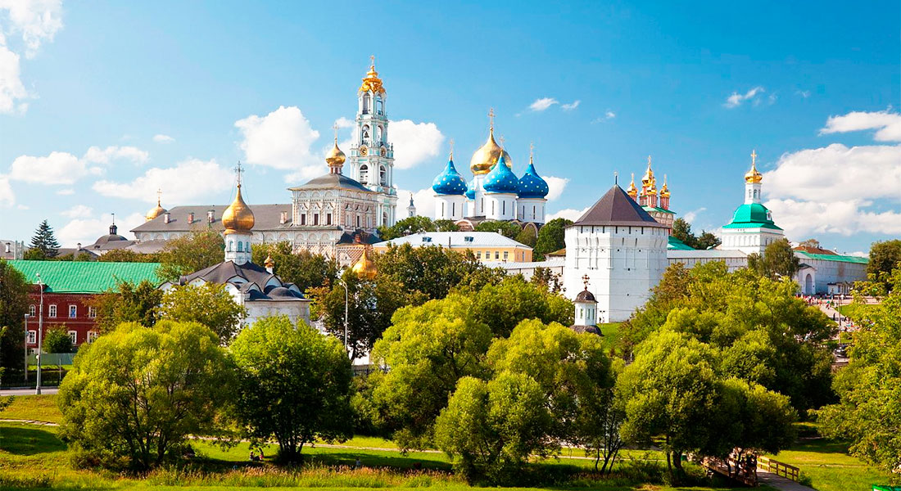
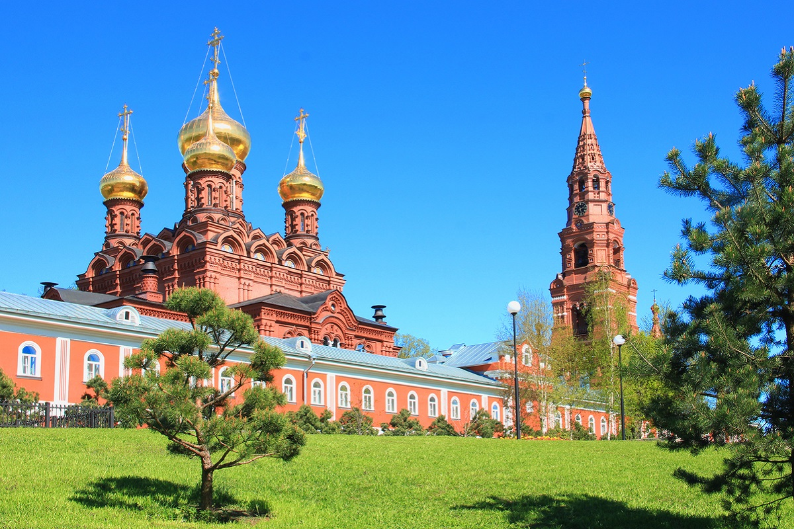

Сергиев Посад
 
Сергиев Посад единственный из подмосковных входит в Золотое Кольцо России и впечатляет совершенно разными моментами. Ему приписывают появление русской матрешки, знаменитой теперь на весь мир, и называют «столицей игрушечного царства». Своим вниманием не обделяют его государи, писатели и другие видные лица истории, приезжающие к святыням обители. Свое впечатление о лавре написал даже француз Дюма-отец, а М. Пришвин жил в окрестностях десяток лет, восторгаясь пейзажами.
Ежегодно зимой и летом город посещает в несколько раз большее количество туристов и паломников, нежели жителей в нем. Лавра является главной достопримечательностью города, но есть, что посмотреть, кроме нее.
Достопримечательности
Свято-Троицкая Сергиева лавра
Вы наверняка слышали название Троице-Сергиева лавра: это один из самых крупных монастырей России. Более семисот лет назад здесь был лесистый холм, на котором будучи еще совсем юным выстроил свою келью Сергий Радонежский, сын ростовских и московских бояр Кирилла и Марии, яростно спешащий служить Богу. Он жил по примеру первых святых христианства, а за ним следовали другие. Так появилась целая обитель со своим уставом.

Троицкий собор
Появился первым после сожжения обители татарским ханом в 1408 г. Храм является одним из немногих в Подмосковье, сделанных из белого камня. В нем хранятся мощи и несколько вещей Преподобного Сергия Радонежского. Известен также иконами работы Андрея Рублева, умелого иконописца. К сожалению, в XVI в. они были заменены другой росписью.
Церковь Никона Радонежского
В 1547 г. Церковный Собор установил повсеместное почитание памяти преподобного Никона, Радонежского чудотворца - ученика и ближайшего соратника Преподобного Сергия, близкого ему и в земной и в жизни вечной. В следующем году над могилой преподобного Никона была построена небольшая каменная церковь, замененная 75 лет спустя существующим храмом, пристроенном к южной стене Троицкого собора.
Духовская церковь
Храм строился псковскими мастерами, приглашенными в Москву великим князем Иваном III. Образцом для строительства Духовской церкви послужил Троицкий собор, основные формы и пропорции которого (высота до завершения креста 30 м) повторены в новом храме. Однако новое строение имеет принципиальное отличие. Уникальное сочетание храма и звонницы, где круглый ярус звонницы с колоколами расположен на сводах церкви, получило наименование «церковь иже под колоколы». Она считается древнейшим сохранившимся сооружением подобного типа.
Собор Успения Пресвятой Богородицы
Собор Успения Пресвятой Богородицы находится в самом сердце Троице-Сергиевой лавры. Сам собор возведен в 16 веке после указа Иоанна IV Грозного. Воздвижение Успенского собора в то время получило государственное значение. Строительство продолжалось больше 25 лет, образцом для плана постройки послужил Успенский собор Московского Кремля. Успенский собор по строению пятикупольный, обладает богатым внутренним убранством: золоченый пятиярусный иконостас состоит из 76 старинных икон, стены самого великого храма расписаны ярославскими и троицкими мастерами. Среди фресок можно видеть многих представителей княжеских родов. Внутреннее убранство Успенского собора поражает грандиозными размерами и насыщенностью света.
Гефсиманский Черниговский скит
Вы наверняка слышали название Троице-Сергиева лавра: это один из самых крупных монастырей России. Более семисот лет назад здесь был лесистый холм, на котором будучи еще совсем юным выстроил свою келью Сергий Радонежский, сын ростовских и московских бояр Кирилла и Марии, яростно спешащий служить Богу. Он жил по примеру первых святых христианства, а за ним следовали другие. Так появилась целая обитель со своим уставом.
Спасо-Вифанский монастырь
Наравне с Гефсиманским скитом привлекает внимание посетителей Сергиева Посада монастырь у юго-восточных границ города — Спасо-Вифанский. Основной причиной этого стал поистине уникальный престол Преображенской церкви. Он сделан в виде пещеры горы Фавор и символизирует события древней иерусалимской Вифании — Воскрешение Лазаря. Верхний престол — Преображение Господня.
Музеи
Сергиево-Посадский музей-заповедик.
Крупнейшим является Сергиево-Посадский музей-заповедник, названный «Эрмитажем русской культуры» и собравший впечатляющие коллекции русского искусства: живопись, предметы декоративно-прикладного искусства, графику, книги, матрешки.
Сергиевская кухмистерская
В музее «Сергиевская кухмистерская» представлена редкая коллекция подлинных плит из чугуна, которые были изготовлены в XIX–XX веках. Также здесь можно увидеть старинную посуду из меди и фарфора, бульотки и даже разнообразные механизмы для кухни.

Музей «Жили-были»
Основная форма работы музея - театрализованные экскурсии, во время которых дети, перевоплощаются в сказочных героев и вместе с экскурсоводами — тоже сказочными персонажами, путешествуют по сказкам.
Музей игрушки имени Н. Д. Бартмана
Крупное собрание кукол и игрушек представлено в Музее игрушки имени Н. Д. Бартмана. Экспонаты собраны со всего мира и ценны высокой художественностью, занимательны не только для детей.